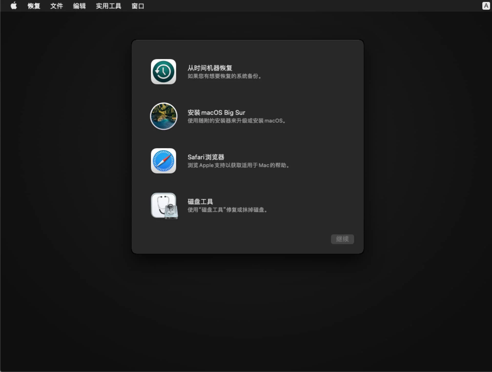
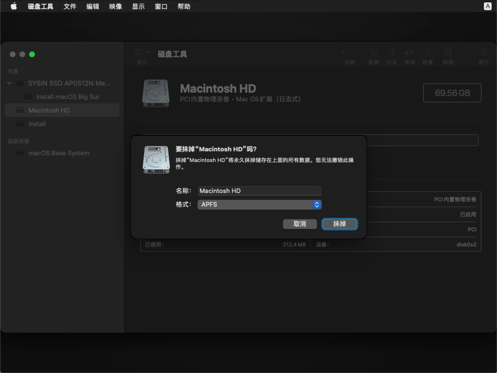
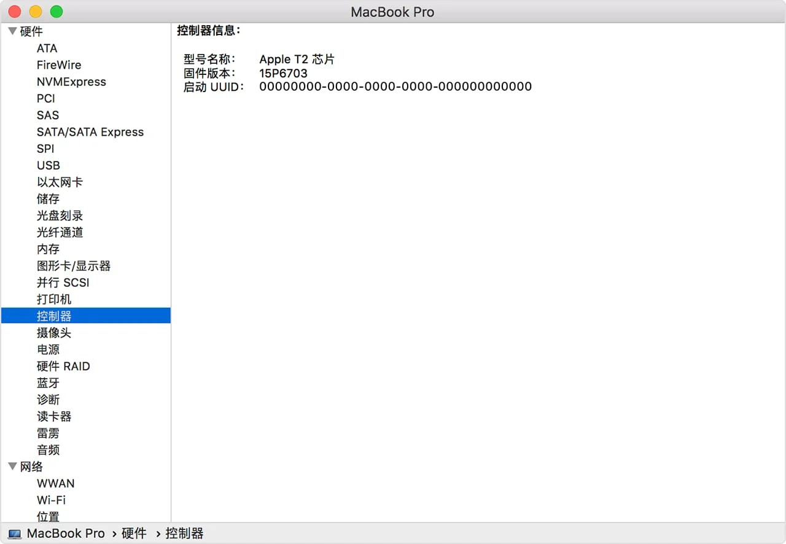
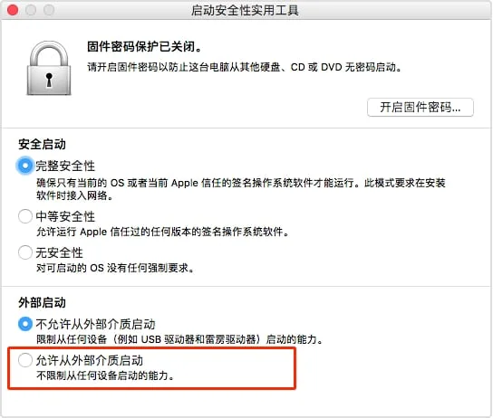
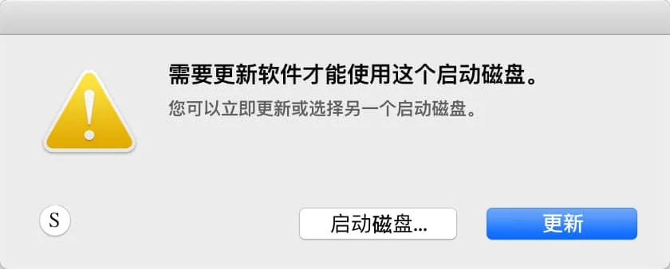
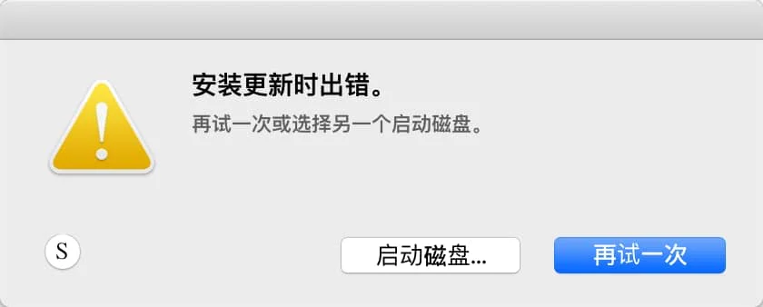
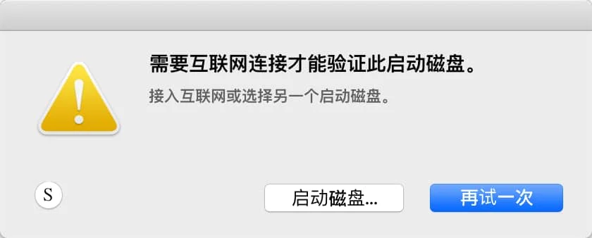
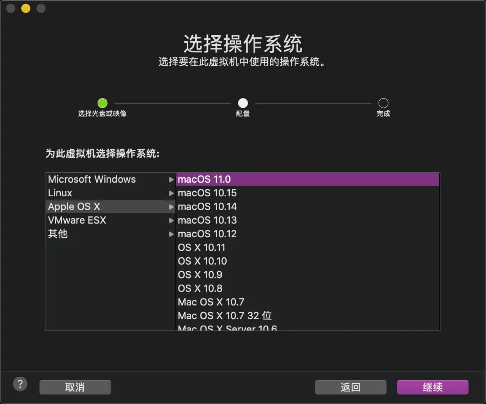
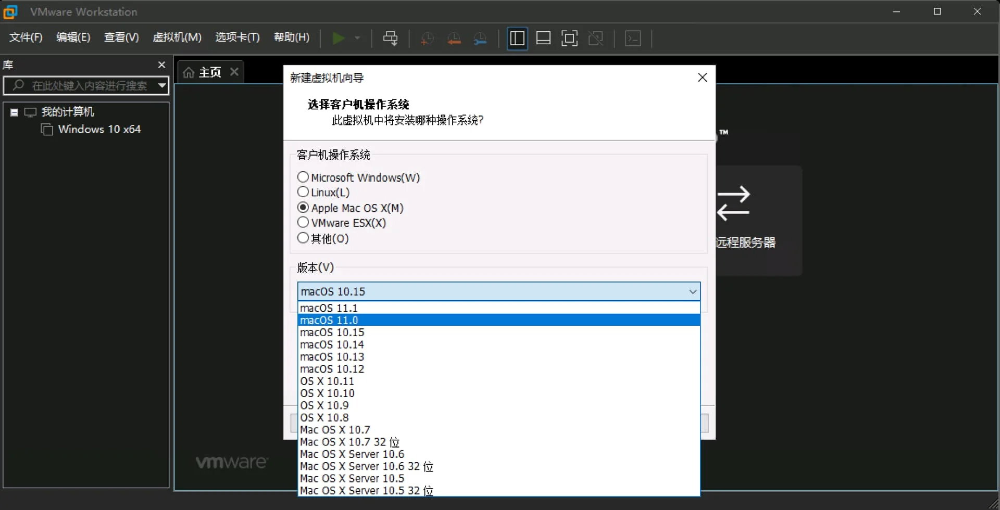
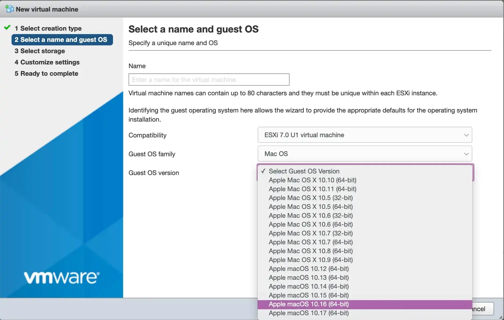

本文已经更新：如何在 Mac 和虚拟机上安装 macOS Tahoe、macOS Sequoia 和 macOS Sonoma
请访问原文链接：如何在 Mac 和虚拟机上安装 macOS Tahoe、macOS Sequoia 和 macOS Sonoma 查看最新版。原创作品，转载请保留出处。
抄袭是最廉价的捷径，撑不起门面，也遮不住灵魂的不堪。本站的沉默不是默许，是给你留的最后一点体面。
作者主页：sysin.org
macfz：请停止抄袭！
2022-06-05 更新：简化步骤和逻辑，更新版本：如何在 Mac 和虚拟机上安装 macOS Tahoe、macOS Sequoia 和 macOS Sonoma。
2021-04-23 更新：更新到 ESXi 7.0 U2 Unlocker，修正个别链接错误。
2020-12-29 更新：增加 VMware Workstation 16.1 Patch，直接运行 macOS Big Sur。
2020-11-30 更新：增加 ESXi 7.0 U1 Unlocker，直接运行 macOS Big Sur。
2020.11.17 更新：增加配备 Apple T2 安全芯片的 Mac 额外操作步骤。
本文适用以下场景：
Mac 上全新安装 macOS Big Sur（在官方兼容列表中的硬件）
如果 Mac 不在官方兼容性列表，请参看：在不受支持的 Mac 上安装 macOS Big Sur
在线升级不在讨论范畴，补丁加补丁…
在 ESXi（物理机）、macOS、Linux 和 Windows 中安装 macOS Big Sur 虚机

1. 获取 macOS Big Sur 正式版软件包
百度网盘链接：
可启动 ISO 映像，可用于虚拟安装
Mac App Store
https://apps.apple.com/app/macos-big-sur/id1526878132
或者打开 App Store 搜索 macOS Big Sur 下载即可。
上述方式，都会将 Install macOS Big Sur.app 放置于 /Applications （应用程序）下面。
2. 了解 macOS Big Sur 兼容设备
MacBook 2015 年和后续机型 进一步了解 >
MacBook Air 2013 年和后续机型 进一步了解 >
MacBook Pro 2013 年末和后续机型 进一步了解 >
Mac mini 2014 年和后续机型 进一步了解 >
Mac Pro 2013 年和后续机型 进一步了解 >
iMac 2014 年和后续机型 进一步了解 >
iMac Pro 2017 年和后续机型 (所有机型)
如果您的 Mac 不在兼容性列表请参看这里：在不受支持的 Mac 上安装 macOS Big Sur
3. 使用移动存储介质全新安装
(1) 一般步骤
确保已经下载好
Install macOS Big Sur.app（安装 macOS Big Sur）并放置于/Applications（应用程序）下DMG 或者 ISO 格式的软件包，需要打开拖拽到 “应用程序” 文件夹
PKG 格式的软件包，打开根据提示自动安装到 “应用程序” 文件夹
在 Mac App Store 下载的 App 会自动保存在 “应用程序” 文件夹
创建启动 U 盘
准备一个 16G 或者以上的 U 盘，打开 “实用工具> 磁盘工具”，选择 U 盘，点击 “抹掉”，格式如下：
提示：U 盘也可以使用移动硬盘替代，特别是 SSD 移动硬盘，速度更快。
- Mac OS X 扩展（日志式）；
- GUID 分区图；
- 分区名称：sysin（默认为 Untitled，可以自定义，注意下面终端命令中的 sysin 也要改成你自定义的同样的名称）
打开终端，执行如下命令：
1
sudo /Applications/Install\ macOS\ Big\ Sur.app/Contents/Resources/createinstallmedia --volume /Volumes/sysin
注意：创建完毕后，分区名称将自动修改为：Install macOS Big Sur
使用 U 盘启动安装
重新启动，按住 option 键不放，直到出现启动选择画面，选择 Install macOS Big Sur 图标，启动安装画面。
搭载 Apple 芯片的 Mac 电脑是按住电源按钮不放，会显示可引导宗卷和一个标有 “选项” 字样的齿轮图标。

选择磁盘工具，抹掉原有磁盘（默认名称：Macintosh HD，格式：APFS）即可全新安装
注意：点击 “磁盘工具” 字符左侧的 “显示” 图标，勾选 “显示所有设备”，默认是 “仅显示卷宗”，点击最上层物理磁盘名称，然后在点击 “抹掉”。

关闭磁盘工具，选择 “安装 macOS Big Sur”，根据提示多次点击下一步即可完成安装
(2) 配备 Apple T2 安全芯片的电脑需要允许从外部介质启动
下列 Mac 电脑配备了 Apple T2 安全芯片：
- 2020 年推出的 iMac
- iMac Pro
- 2019 年推出的 Mac Pro
- 2018 年推出的 Mac mini
- 2018 年或之后推出的 MacBook Air
- 2018 年或之后推出的 MacBook Pro
您也可以通过 “系统信息” 来了解您的 Mac 有没有配备这款芯片：
- 在按住 Option 键的同时，选取苹果 () 菜单 >“系统信息”。
- 在边栏中，选择 “控制器” 或 “iBridge”，具体取决于所使用的 macOS 版本。
- 如果您在右侧看到 “Apple T2 芯片”，即表示您的 Mac 配备 Apple T2 安全芯片。

配备 Apple T2 安全芯片的 Mac 电脑 具有启动安全性实用工具。这个实用工具提供了以下三项功能，以帮助保护您的 Mac 免受未经授权的访问：固件密码 保护、安全启动 和 外部启动。
要打开启动安全性实用工具，请按照以下步骤操作：
- 将您的 Mac 开机，然后在看到 Apple 标志后立即按住 Command (⌘)-R 键。Mac 会从 macOS 恢复功能 启动。
- 在您看到 “macOS 实用工具” 窗口后，请从菜单栏中选取 “实用工具”>“启动安全性实用工具”。
- 当系统要求您进行身份验证时，点按 “输入 macOS 密码”，然后选取管理员账户并输入相应的密码。

此时点选 “允许从外部介质启动”，退出启动安全性实用工具。
重新启动，按住 option 键不放，选择 “Install macOS Big Sur”，启动安装画面 (sysin)。
搭载 Apple 芯片的 Mac 电脑是按住电源按钮不放，会显示可引导宗卷和一个标有 “选项” 字样的齿轮图标。
如果出现报错：“需要更新软件才能使用这个启动磁盘。”，请看下文。
(3) 配备 Apple T2 安全芯片的电脑可能需要额外的操作
在配备 Apple T2 安全芯片的 Mac 在安装过程中，需要联网验证和下载软件更新，如果 “查找我的 Mac” 没有关闭，需要输入 Apple ID 密码才能继续操作 (sysin)。
在配备 Apple T2 安全芯片的 Mac 启动 “Install macOS Big Sur”，可能报错：“需要更新软件才能使用这个启动磁盘。”

此时需要，连接网络（点击右上角的 Wi-Fi 图标联网）后，点击 “更新” 按钮，等待软件更新，更新完毕自动重启。
可能出现 “安装更新时出错。” 的提示，确保网络访问正常，点击 “再试一次”（因网络访问原因，可能需要多次重试）。

重启后再次启动 “Install macOS Big Sur”，可能仍然报错如下，确保已经联网，点击 “再试一次”。

按提示重启后，当系统要求您进行身份验证时，点按管理员账号，输入密码，正常进入安装画面。
(4) 搭载 Apple 芯片的 Mac 电脑注意事项
搭载 Apple 芯片的 Mac 电脑，允许从外部介质启动，无需修改，只是启动外部介质的操作不同：按住电源按钮不放，会显示可引导宗卷和一个标有 “选项” 字样的齿轮图标。此时选择 “Install macOS Big Sur”，即可启动安装画面。
搭载 Apple 芯片的 Mac 电脑，可以在 DFU 模式恢复 macOS 软件（类似 iOS）。详见笔者另外一篇文章：在 Apple silicon Mac 上 DFU 模式恢复 macOS 固件。
4. macOS 系统如何降级安装
(1) 识别机型
请识别你的 Mac 机型（ -> 关于本机）。
确定您使用的是否为搭载 Apple T2 安全芯片的 Mac 机型，确定您使用的是不是搭载 Apple 芯片的 Mac，然后做相应修改 (sysin)。
默认启用 “完整安全性”，“不允许从外部介质或可移动介质启动”，需要将安全启动修改为 “中等安全性”，允许的启动介质修改为 “允许从外部介质或可移动介质启动”。
默认启用 “完整安全性”（等于 iOS），需要将安全策略设置为 “降低安全性”。
详见：在搭载 Apple 芯片的 Mac 上更改启动磁盘的安全性设置。
备注：搭载 Apple 芯片的 Mac 电脑，外部启动默认允许。
非上述两种 Mac 机型
没有任何限制，使用可引导安装器抹掉磁盘 (sysin)，全新安装即可降级。
(2) 创建可引导的 macOS 安装介质
按照步骤操作，即可启动到安装 macOS 画面，请先选择磁盘工具，抹掉整个磁盘，开始全新安装。
5. 虚拟机安装
安装之前需要准备可引导的 macOS 软件包，默认 Apple 官方提供的软件包都是不可引导的。
直接下载可启动 ISO 映像，请访问：macOS Big Sur 11.7.11 (20G1443) Boot ISO 原版可引导映像下载
本例仅测试在 VMware 软件中安装，其他虚机软件未验证，方法类似。
Server：VMware ESXi 7.0 & vCenter Server 7.0，ESXi 8.0 & vCenter Server 8.0
macOS：VMware Fusion 12
(1) 在 macOS 中安装虚拟机
VMware Fusion 12 和 Parallels Desktop 16 for Mac 都可以完全支持 macOS Big Sur，使用可引导的 ISO，直接安装即可。

(2) 在 Windows 或者 Linux 中安装虚拟机
VMware Workstation 16 已经完全支持 macOS Big Sur，当然运行在非 Mac 硬件上需要 unlocker 才可开启。
笔者已经发布一个 补丁，来方便解决这个问题，补丁后支持 macOS，可以直接运行 macOS Big Sur。

VirtualBox Version 6.1.16 (2020-10-16) 更新显示可以支持 macOS Big Sur。
(3) 在物理机 ESXi 中安装虚拟机
本文落笔之时，最新的 ESXi 7.0 Update 1 官方 Guest OS 列表仅支持到 macOS 10.15，但实际上可以正常运行 macOS Big Sur，当然运行在非 Mac 硬件上需要 esxi-unlocker 才可开启。
新建 vm 时，兼容性选择 ESXi 7.0 U1，可以看到 10.16 即 Big Sur 11.0 (VMware 甚至发布了 macOS 10.17 ？)

可以使用本站的 ESXi 7.0，配合以下第 6 条解决报错。安装过程这里就不再赘述。
笔者已经发布一个新版: VMware ESXi 7.0 U2，可以直接运行 macOS Big Sur。
(4) 解决 “BiErrorDomain Error 3.” 报错
在一些早期版本的虚拟化软件中，尚未完全支持 macOS Big Sur，会出现 “BiErrorDomain Error 3.” 报错，可参照一下方法解决。
使用 VMware 安装：
在 VMware 中安装 macOS Big Sur，都会提示 “BiErrorDomain Error 3.”，无法继续，需要编辑 vmx 文件添加以下配置：
1 | smbios.reflectHost = "TRUE" |
以上示例模拟的是 16-inch MacBook Pro，可以根据需要选择其他兼容的 Mac 设备。
获取 Mac Model ID，执行如下命令
1 | sysctl hw.model |
获取 Mac Board ID，执行如下命令：
1 | ioreg -l | grep board-id |
适用的 VMware 软件和版本：
在以下软件和版本中测试通过
VMware ESXi 7.0.0
VMware Fusion 11.5.5
VMware Workstation 15.5 Windows x64
提示：不要安装自带的 VM-Tools，可能存在兼容性问题，下载 VMware Tools 12.0 或以上版本安装。
使用 VirtualBox 安装：
使用 VirtualBox 安装 macOS Big Sur，出现 “BiErrorDomain Error 3.” 报错，解决方法类似：
1 | cd “C:\Program Files\Oracle\VirtualBox\” |
使用 Parallels Desktop 安装：
在下面设置以下值：Hardware > Boot Order > Advanced Settings > Boot Flags
devices.mac_hw_model="MacBookPro16,1"devices.smbios.board_id="Mac-E1008331FDC96864"

文章用于推荐和分享优秀的软件产品及其相关技术，所有软件提供免费版或试用版。内容若侵犯了您的版权，请联系作者删除。如果您喜欢这篇文章，或者觉得它对您有所帮助，亦或发现有不当之处；欢迎发表评论，也欢迎分享这个网站，或者赞赏一下，谢谢！提示：捐赠或赞赏属于自愿赠予行为，提交后即表示您对作者的支持与认可。为避免误操作，请在确认前仔细检查金额，支付完成后将无法撤销或退还。
 支付宝赞赏
支付宝赞赏  微信赞赏
微信赞赏赞赏一下
敬请注册！点击 “登录” - “用户注册”（已知不支持 21.cn/189.cn 邮箱）。 请勿使用联合登录（已关闭）。